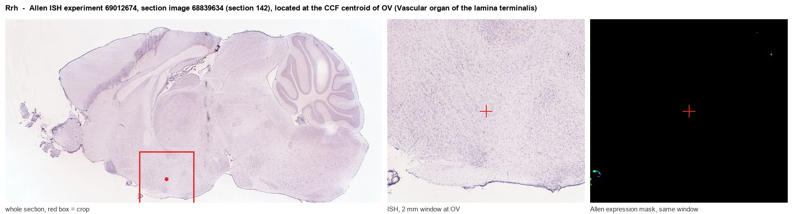
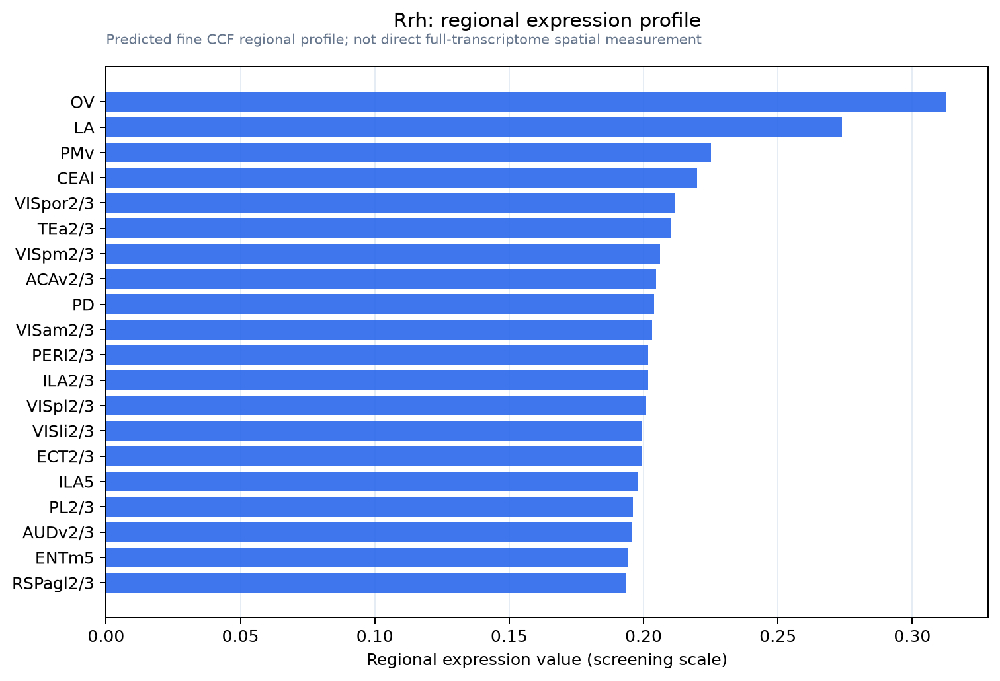

Rrh
Visual pigment-like receptor peropsin
Spatial tier: REGION_BIASED · Class: GPCR · Top region: OV (Vascular organ of the lamina terminalis) · Positive regions: 32/554
41.7Discovery Score
33.5Targetability Score
CEvidence grade C
What this means: Rrh: fine CCF profile is region-biased toward OV (top regions: OV, LA, PMv, CEAl, VISpor2/3); this is a discovery lead, not direct proof.
Function in OV: evidence, prediction, innovation
- Gene function
- RRH encodes peropsin, a non-visual opsin GPCR that binds retinal but behaves largely as a photoisomerase rather than a classical phototransduction receptor. In mammals it sits in the apical microvilli of retinal pigment epithelium, where it regulates the movement of vitamin A between retina and RPE; its coupling partners in other tissues are unknown.
- Region function
- The vascular organ of the lamina terminalis (OVLT) is a sensory circumventricular organ lacking a blood-brain barrier; its glutamatergic osmosensitive neurons detect plasma hypertonicity and drive thirst, vasopressin release and sympathetic/thermoregulatory responses through the SFO-MnPO-PVN network.
- Published in this region
- none No region-specific literature found. Peropsin work is confined to the eye (Cook 2017, vitamin A transit in RPE) and comparative opsin evolution (Upton 2021); the closest conceptual link is that other non-visual opsins such as OPN5 are expressed in hypothalamic and periventricular cells and mediate deep-brain photoreception.
- Predicted function
- Prediction: peropsin in the OVLT, if real, would most likely act in the retinoid-handling ependymal/tanycytic cells lining the third ventricle rather than as a light sensor, buffering local retinoid isomer pools that feed retinoic-acid signalling in the lamina terminalis. A light-dependent alternative, deep-brain photoreception modulating drinking and vasopressin rhythms, is testable: Rrh knockouts should be assayed for altered circadian drinking (as in the anticipatory-thirst paradigm) under different light spectra. Low prior probability, high payoff if true.
- Innovation
- ★★★★★ 5/5 An eye-restricted opsin appearing in a circumventricular organ is either a striking deep-brain photoreception finding or an artefact, and nobody has looked.
- Tools
- Rrh knockout mice; anti-peropsin antibodies; no selective pharmacology; validation should start with RNAscope for Rrh in the OVLT.
- References
Direct evidence located at the region

Allen ISH experiment 69012674, section image 68839634 (section 142): the section that contains the CCF centroid of Vascular organ of the lamina terminalis according to the Allen image-to-atlas alignment (reference_to_image), with a 2 mm window around that point. Left: whole section, red box = window. Middle: ISH signal. Right: Allen's expression-mask view of the same window. open this image in the Allen viewer
Look it up yourself: Allen Mouse Brain ISH for RrhAllen reference atlas: OV (structure 763)ABC Atlas MERFISH viewer(in the ABC Atlas choose dataset MERFISH-C57BL6J-638850-CCF, colour cells by gene "Rrh" or by parcellation_substructure "OV")All genes confined to OV + 3-D brain
Direct spatial evidence
MERFISH REGION LOCATOR

Regional expression figure

Predicted WMB × fine-CCF profile; not direct full-transcriptome spatial measurement.
Spatial profile
Evidence and specificity
- Evidence status
- PREDICTED_FINE
- Direct sources
- None; predicted localization only
- Exclusive threshold
- 12 positive regions out of 554
- Spatial specificity
- 0.272
- Top-region fraction
- 0.049
- Filter status
- PASS
Interpretation limits
- Cell-type-to-region projection is imputed expression, not direct spatial measurement.
- Adult reference atlases do not establish stability across age, sex, strain, state, or disease.
- Transcript abundance does not guarantee protein abundance or genetic-tool performance.